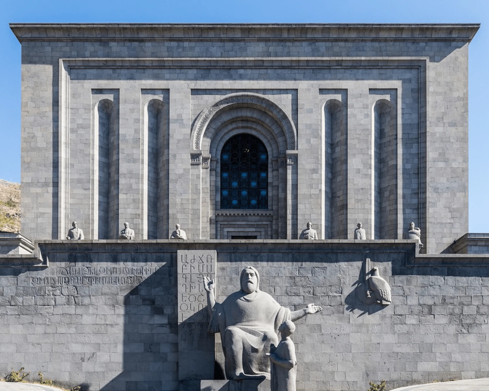

La Cascada d'Erevan
Escalinata colossal d'art contemporani que ofereix una panoràmica privilegiada de la ciutat i del mont Ararat.
Reservar Visita
Temple de Garni
Joia d'estil jònic del segle I d.C. envoltada per les impressionants columnes basàltiques de la Simfonia de les Pedres.
Reservar Visita
Monestir de Khor Virap
Lloc de pelegrinatge històric on Sant Gregori l'Il·luminador va estar empresonat, amb la millor perspectiva d'Ararat.
Reservar Visita
La Simfonia de les Pedres
Admira les impressionants columnes naturals de basalt del congost de Garni, formades per l'activitat volcànica.
Reservar Visita
Matenadaran
Un dels majors repositoris del patrimoni manuscrit i cultural d'Armènia, amb col·leccions extraordinàries i reconeixement mundial.
Reservar Visita
Llac Sevan
Un dels llacs d'alta muntanya més grans del món, famós per les seves aigües blaves i la península de Sevanavank, amb vistes als paisatges muntanyosos d'Armènia.
Planificar visita